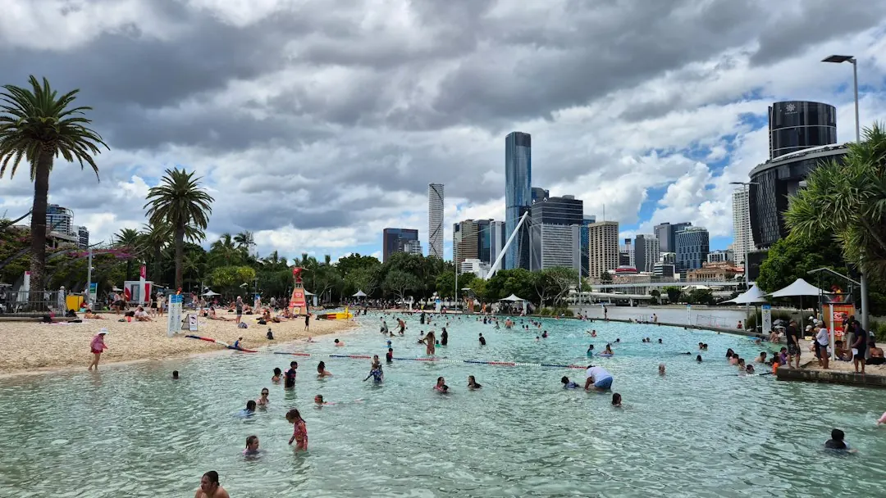

Concrete pool options in Brisbane include custom shotcrete, precast, plunge, lap, raised and spa combinations. Pricing is shaped by excavation, rock, access, spoil removal, finishes, heating and landscaping. Plans and engineering need approval before construction, while a compliant barrier must be certified before the pool contains 300 mm of water. For domestic contracts over $3,300, check the five business day cooling off period and Queensland Home Warranty Scheme cover.
For homeowners comparing concrete pool installation brisbane options, the practical decision comes down to block conditions, intended use, quote inclusions and approval timing.
Concrete Pool Installation Brisbane Explained
Concrete Pools Brisbane presents concrete pools as an option for Brisbane yards with varied shapes, slopes and access conditions. Decide first whether the pool is for laps, cooling off, family play or an attached spa. That choice sets the broad size, depth and style worth pricing.
Record the property area, slope, side access, likely machine or crane route, sewer line position and space needed for fencing. A tight inner suburb block can create different delivery and excavation questions from a broad backyard. A sloping or rocky site may call for retaining, a raised design or more detailed excavation pricing. For another perspective on selecting a builder, see the Brisbane concrete pool builders guide.
Compare quotes by scope
Quote totals are difficult to compare when the included work differs. Ask each provider to identify excavation, rock, spoil removal, finishes, fencing, landscaping, heating and any spa component separately. Standard excavation, extra depth, rock and spoil may be treated differently, so exclusions should be written down before signing.
- Confirm the pool type, dimensions and depth.
- Ask what access assumptions affect the price.
- Check whether fencing, finishes, landscaping and heating are included.
- Ask how unexpected rock, extra excavation or spoil removal will be priced.
- Request variations and exclusions in writing.
This comparison helps explain why a customised design, compact plunge pool and factory made shell can produce different quotes for the same property.
Put approvals and fencing in sequence
Council or a private certifier must approve plans and engineering before building starts. Building over a sewer or in a special planning zone can create further approval questions. Ask who handles each application and which documents are included in the agreed scope.
Queensland pool safety rules apply to residential pools whether or not children live at the property. The barrier must be certified before the pool contains 300 mm or more of water, and the pool must be registered with QBCC. Gates, non climbable zones and required signage also need to remain compliant.
A certifier approved temporary barrier generally covers up to three months. Longer use requires another inspection and written permission from the certifier or pool safety inspector. For domestic contracts over $3,300, check the five business day cooling off period and confirm that Queensland Home Warranty Scheme cover is arranged for insurable work above that amount.
Match the pool form to the site
Custom shotcrete can follow the block's shape, slope and side access. Precast concrete shells are factory made and may be craned into yards where access or build time is tight, making the delivery route an important question.
Concrete plunge pools suit small blocks and courtyards, while lap pools prioritise swimming length. Raised and semi recessed designs can respond to sloping, rocky or hard to dig sites. An attached or spilling spa should be considered alongside heating and fencing rather than added after the main design is fixed.
For an older pool, resurfacing, repairs and waterproofing may be more suitable than replacement. Ask whether the existing structure's condition supports that scope, and compare it with the excavation, finishes and approvals required for a new pool.
Who this guide applies to
This guide is for Brisbane homeowners planning a new concrete pool, replacing an older pool or checking whether a quote reflects their property. It is particularly relevant where the site has slope, rock, restricted access, a sewer constraint, a special planning question or limited fencing space.
Local conditions can differ between hillside blocks in Kenmore and Chapel Hill and bayside yards in Wynnum and Manly West. Use those differences as a prompt to ask site specific questions, not as a substitute for a site assessment. Before requesting pricing, write down the intended use, preferred pool form, access limits and required inclusions.
- Define the use. Choose whether the pool is for laps, cooling off, family play, an attached spa or another clear purpose.
- Check the block. Note slope, access, sewer lines, likely rock and the space required for a compliant barrier.
- Compare scopes. Review excavation, spoil, finishes, fencing, landscaping, heating and variations line by line.
- Request written pricing. Provide the suburb, preferred pool type and site notes when requesting a quote from a licensed and insured local contractor.
| Option | Often considered when | Questions to ask |
|---|---|---|
| Custom shotcrete | The shape, slope or access needs a design built around the block | How will excavation, depth and side access affect the scope? |
| Precast concrete | Access or build time makes a factory made shell worth considering | Is a crane required, and where can delivery occur? |
| Plunge or lap pool | The yard is compact, or swimming length is the priority | How will dimensions affect fencing and approvals? |
| Raised or semi recessed | The site is sloping, rocky or hard to dig | Are retaining, excavation and engineering included? |
| Resurfacing | An existing pool is worn, stained or cracked | Is repair, waterproofing or replacement the better scope? |
Common questions
What changes the cost of a concrete pool in Brisbane? Excavation, rock, access, spoil removal, finishes, heating and landscaping are the main cost drivers identified by Concrete Pools Brisbane. Size, depth, a spa and the chosen pool form can also change the scope.
Does every Brisbane home pool need a barrier? Queensland pool safety rules apply to every residential pool, whether or not children live there. Certification is required before the pool contains 300 mm or more of water, with gates, signage and non climbable zones kept compliant.
Can a precast pool work on a tight block? It may suit a site where access or build time is tight, but the delivery route needs checking. Ask whether a crane is required and whether the property has a suitable position for delivery.
What should a quote say about rock and spoil? Ask whether standard excavation includes rock, extra depth and spoil removal. Confirm how unexpected ground conditions or limited space for spoil will be handled and priced.
When should fencing be planned? Plan fencing with the design and construction sequence. Certification is required before the pool reaches 300 mm of water, and a temporary barrier generally covers up to three months unless further written permission is given.
This guide covers Brisbane pool choices, site checks, quote inclusions, approvals, fencing and contract questions.